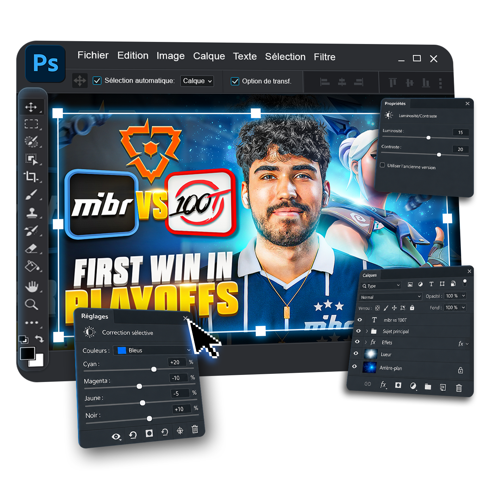

Comment progresser ?
Tu touches à Photoshop sans savoir quelles techniques travailler ni comment analyser tes créations.
 ThomasPJL
ThomasPJL
Pixel Minia · Accompagnement 3 mois
Apprends à créer des miniatures qui donnent envie de cliquer, maîtrise Photoshop et utilise cette compétence pour décrocher tes premiers clients.
50+ cours · Accès à vie · 3 mois de suivi · Bonus freelance

01 · Le point de départ
Tu regardes des tutoriels, tu testes des effets et tu crées quelques miniatures. Pourtant, le passage entre « j’apprends Photoshop » et « je décroche mes premières missions » reste flou. Pixel Minia te donne un chemin clair.
Tu touches à Photoshop sans savoir quelles techniques travailler ni comment analyser tes créations.
Ton portfolio manque de cohérence et ne permet pas encore à un créateur de se projeter avec toi.
Tu ne sais pas où trouver les bons clients, quoi leur écrire ni combien facturer ton travail.
Les tutoriels t’apprennent des outils. Pixel Minia t’apprend un métier.
Ton accompagnateur
Je suis Thomas, miniamaker depuis 2022. J’ai commencé sans client ni réseau, puis j’ai appris à transformer Photoshop en une compétence recherchée par des créateurs de toutes tailles.
Depuis, j’ai travaillé avec plus de 30 créateurs et mes miniatures cumulent plus de 20 millions de vues. Dans Pixel Minia, je te transmets ma méthode de création, mes outils et le système commercial qui m’a permis d’en faire une véritable activité.
02 · Mon travail
Neuf exemples concrets de compositions réalisées pour des créateurs aux univers très différents. Clique sur une miniature pour l’observer en détail.
Ils m’ont confié leur image
 TenZ2,7M abonnés
TenZ2,7M abonnés ScreaM704K abonnés
ScreaM704K abonnés Kaydop509K abonnés
Kaydop509K abonnés ASPAS413K abonnés
ASPAS413K abonnés zen307K abonnés
zen307K abonnés Zekken154K abonnés
Zekken154K abonnés ZywOo136K abonnés
ZywOo136K abonnés Amaury26K abonnés
Amaury26K abonnésPerformances
Retours clients
03 · La méthode
Tu avances dans le bon ordre : comprendre, créer, présenter ton travail puis le vendre aux bons créateurs.
Maîtrise la psychologie du clic, le rôle du miniamaker et les codes visuels de YouTube.
Apprends Photoshop en produisant des miniatures concrètes dans plusieurs niches.
Construis un portfolio cohérent, choisis ta niche et fixe des prix adaptés à ton niveau.
Combine prospection et contenu pour signer puis fidéliser tes premiers clients.
04 · Ce que tu obtiens
Tu apprends à créer des miniatures solides, mais aussi à vendre ton savoir-faire. Les ressources restent accessibles à vie et le suivi t’aide à appliquer chaque étape à ton activité.
Théorie, Photoshop, créations complètes, boîte à outils et acquisition client.
Reviens sur les cours, ressources et futures mises à jour quand tu le souhaites.
Des retours réguliers pour corriger tes miniatures et débloquer ton acquisition.
La formation complète pour consolider ton offre, tes ventes et ta gestion client.
05 · Le programme
Cinq modules progressifs pour apprendre le métier de miniamaker, plus l’accompagnement freelance complet en bonus.
Comprendre le métier, le rôle d’une miniature et les principes qui permettent de progresser sans copier.
Prendre Photoshop en main et acquérir les bases techniques nécessaires pour créer proprement et efficacement.
Reproduire un processus complet sur dix formats YouTube pour comprendre les choix de composition, de lumière et de hiérarchie.
Une bibliothèque de techniques et de raccourcis concrets pour gagner du temps et améliorer immédiatement le rendu de tes créations.
Transformer tes compétences en offre et construire un système adapté au miniamaking pour obtenir tes premiers clients.
Le programme complémentaire pour consolider les fondations de ton activité au-delà de la création de miniatures.
06 · Le suivi
Une miniature s’améliore beaucoup plus vite lorsqu’un professionnel t’explique précisément ce qui attire l’œil, ce qui bloque et quoi modifier.
Un espace réservé aux membres pour partager tes miniatures, poser tes questions et avancer avec d’autres miniamakers.
Des rendez-vous en direct pour analyser ton niveau, corriger tes créations et définir tes prochaines actions commerciales.
Prêt à devenir miniamaker ?
Accède immédiatement à Pixel Minia, au Discord privé, au suivi de trois mois et à l’accompagnement freelance bonus.
07 · Questions fréquentes
Voici les réponses aux questions qui reviennent le plus avant de rejoindre Pixel Minia.
Ton prochain chapitre
Apprends à créer, montre ta valeur et va chercher les clients qui ont besoin de ton regard.
ObtenirAccès à vie · 3 mois de suivi · Discord privé · Bonus freelance